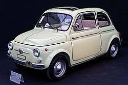
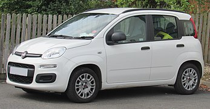
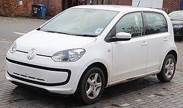
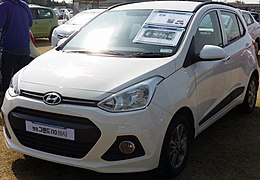
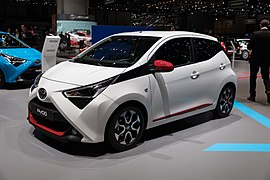
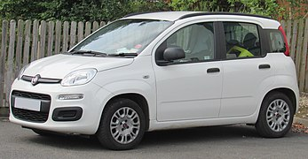
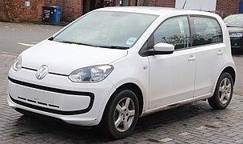
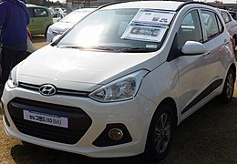
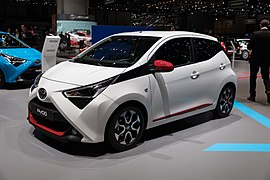

headder
A-клас
A-клас є категорією в системі класифікації пасажирських автомобілів, визначеною Європейською Комісією. Використовується для міських автомобілів і визначається як найменша категорія легкових автомобілів. У Європі також використовується термін "міський автомобіль" (city car). Популярність класу збільшилася в кінці 1950-х років завдяки запуску в серію Fiat 500 та BMC Mini. Станом на 2017 рік продажі A-класу становлять 8% ринку Європи.
Продажі
У Сполучених Штатах автомобілі A-класу становили 0,8% ринку, а в класі домінували Mini та Fiat 500. У Індії, традиційно автомобілі A-класу мали найвищі продажі. Проте за останні роки продажі почали скорочувалися, зменшившись із 70,000 на місяць у 2014 році до 47,000 на місяць у 2016 році. У Італії автомобілі A-класу склали 36,8 відсотків продажів у першій половині 2018 року.
Поточні моделі
У п'ятірку найбільш продаваних автомобілів A-класу в Європі входять Fiat 500, Fiat Panda, Volkswagen Up, Hyundai i10 та Toyota Aygo.
 






